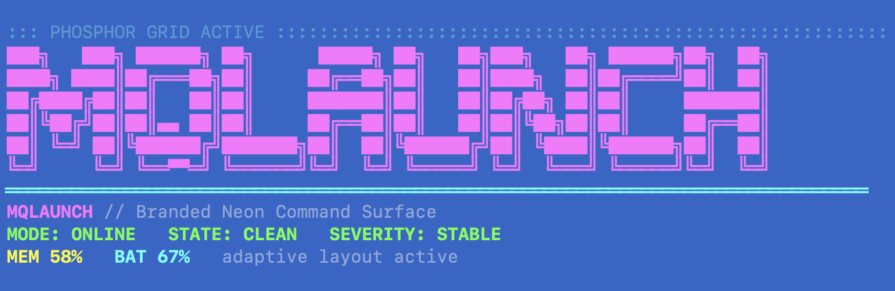

Structured workflows
Run system, dev, performance, tools, and release workflows from one discoverable command surface.
A modular macOS CLI toolkit for turning scattered shell commands into structured workflows. The project centers on mqlaunch, a single terminal entrypoint for diagnostics, automation, system checks, developer utilities, and repeatable local operations.

Run system, dev, performance, tools, and release workflows from one discoverable command surface.
Use doctor, mission-control, network checks, and debug bundles to inspect local environment health.
Browse a searchable macOS terminal guide for commands, keyboard shortcuts, and shell patterns.